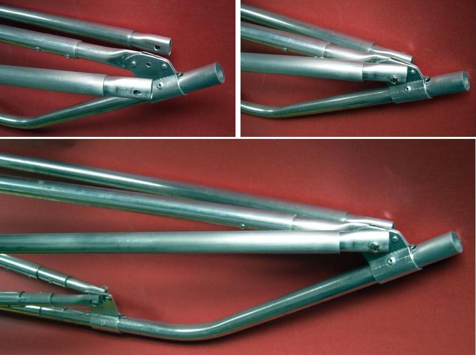

| Sea Otter / Sea Otter - R | Menu Previous Page Next Page |
|
 Aluminum bow details - This is the first use of aluminum stem plates. They are made from a fairly plyable aluminum plate available at Lowe's and Home Depot in 1/16in X 1 1/2in dimensions. The bracket is initially bent by hand around the tube, and then a vise is used to crimp the 1/16" sides together forming a rigid 1/8in plate. Overall, this is less complicated than making HDPE stem plates, though either option works well. |
|